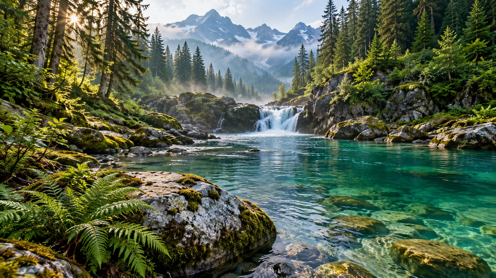

Manim Studio / Shaders
Create your
own effects.
30 shaders. Your images, colors, and motion.
Plus video templates, batch creation, and sound.
The shader playground

Static example. Live effects need WebGL 2.
Live preview01 / Fluted Glass